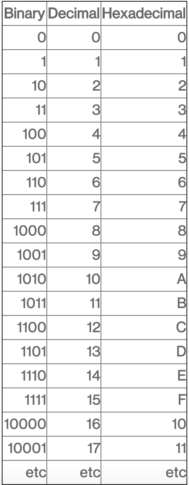
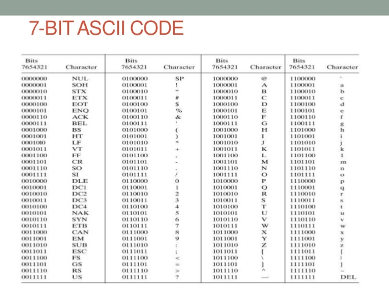

Binærtall består av to siffer (1 og 0)
A bit (short for binary digit) is the smallest unit of data in a computer. A bit has a single binary value, either
0 or 1
In most computer systems, a byte is a unit of data that is eight binary digits long. A byte is the unit most computers
use to represent a character such as a letter, number or typographic symbol.

Tegnsett eller tegnkoding er det som i datamaskiner definerer hvilket lesbart symbol som representeres av et gitt
heltall. All tekst i datamaskiner er remser av heltall, i denne sammenhengen kalt tegnkoder.
The Unicode Consortium develops the Unicode Standard. Their goal is to replace the existing character sets with its
standard Unicode Transformation Format (UTF). The Unicode Standard has become a success and is implemented in
HTML, XML, Java, JavaScript, E-mail, ASP, PHP, etc. The Unicode standard is also supported in many operating
systems and all modern browsers. The Unicode Consortium cooperates with the leading standards development organizations,
like ISO, W3C, and ECMA.
Hexadecimal describes a base-16 number system. That is, it describes a numbering system containing 16 sequential
numbers as base units (including 0) before adding a new position for the next number. (Note that we're using
"16" here as a decimal number to explain a number that would be "10" in hexadecimal.) The hexadecimal numbers
are 0-9 and then use the letters A-F. We show the equivalence of binary, decimal, and hexadecimal numbers in
the table below.
